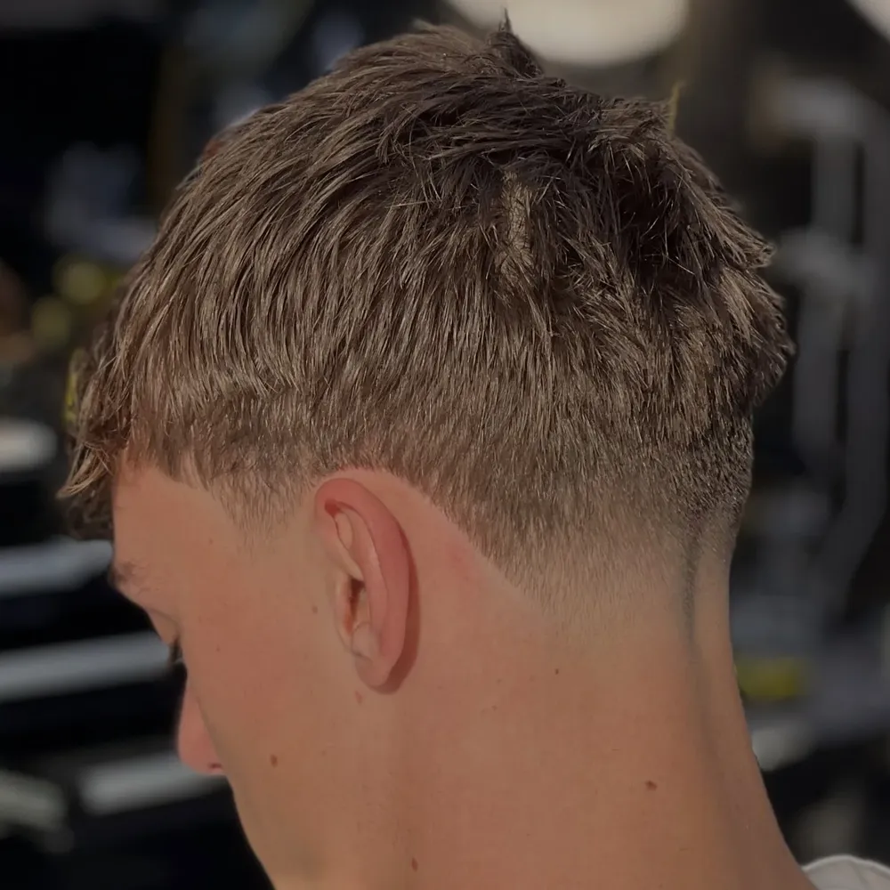
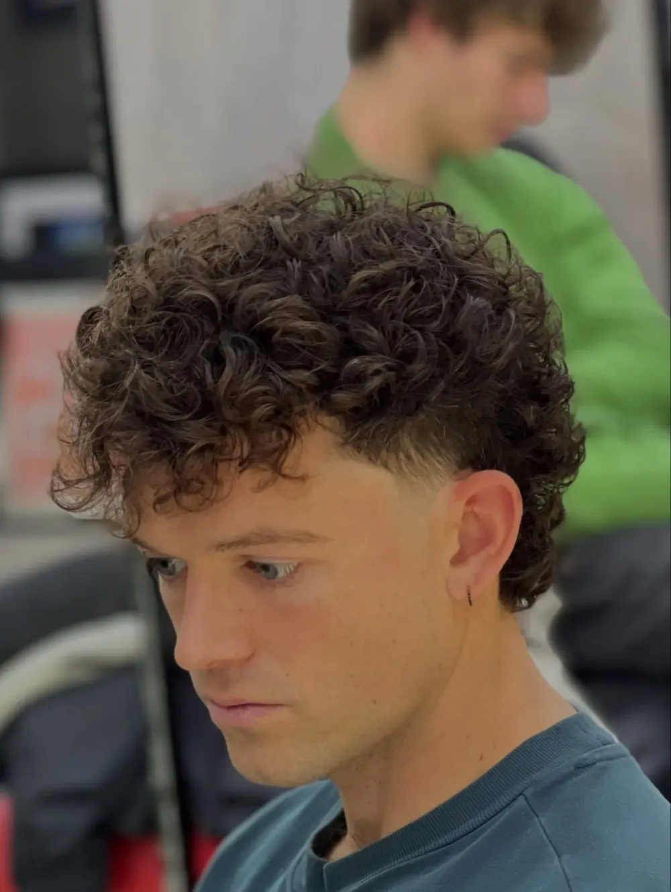
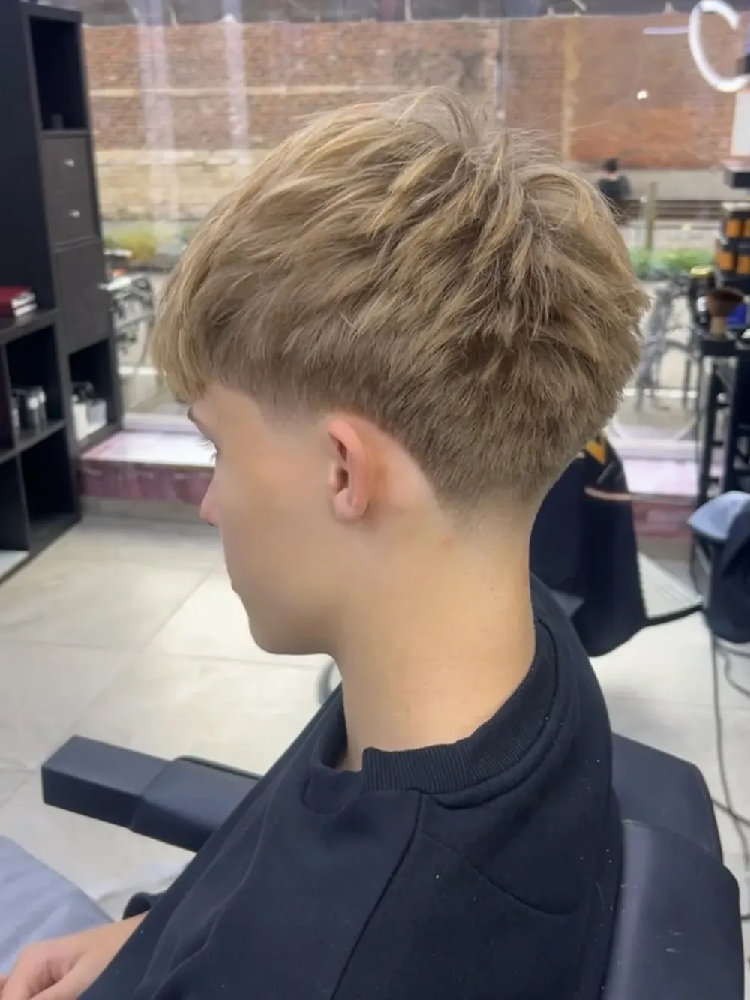
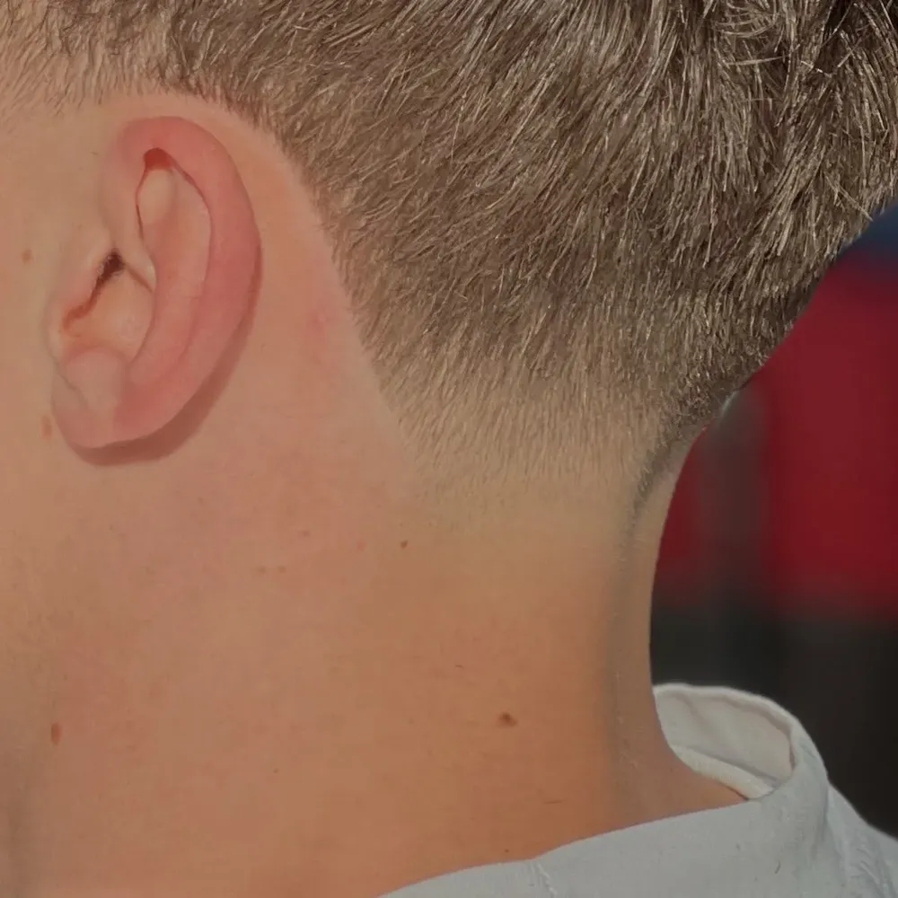
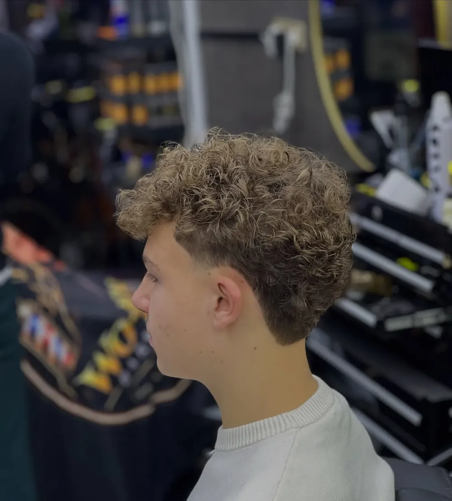
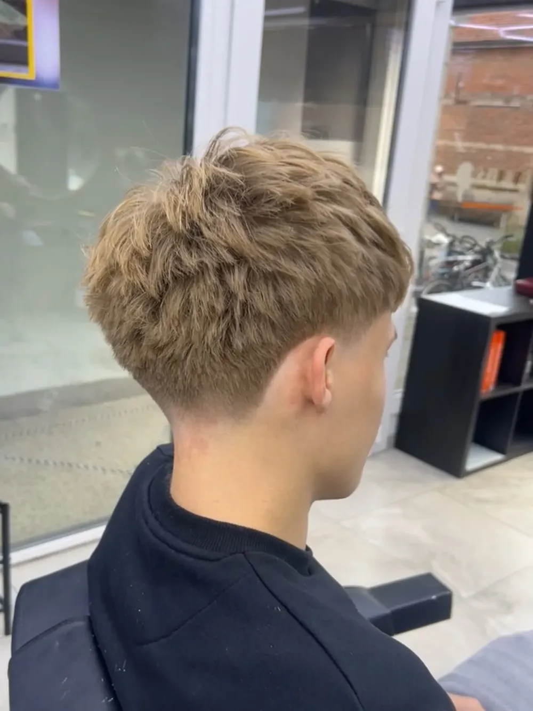
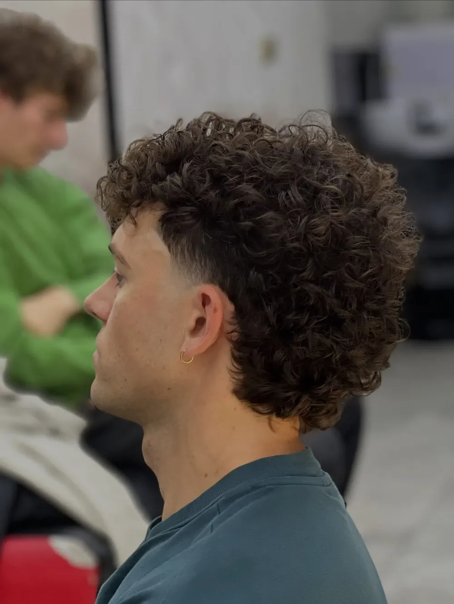
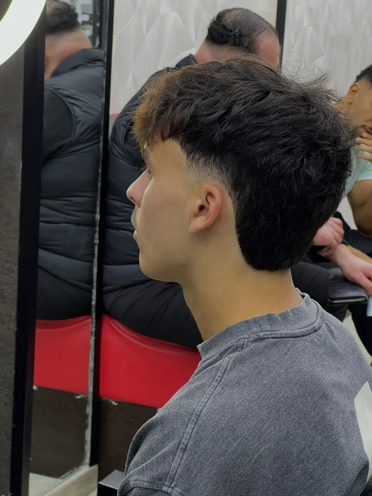

Taper fade
Strakke lijnen en een overgang die je niet ziet beginnen.
Mjahed, Bawar en Renjbar knippen fades, krullen, mullets en baarden. Voor mannen, en voor vrouwen: daar staat de Wo in onze naam voor.
Een fade die strak verloopt, krullen die hun vorm houden, een nek die net goed zit. Zeg wat je wil, of laat een foto zien. Wij zeggen eerlijk wat bij jouw haar past.

Strakke lijnen en een overgang die je niet ziet beginnen.

Knippen en in model brengen, zodat ze thuis ook zo vallen.

Kort aan de zijkant, lengte in de nek. Op jouw maat.

Bijwerken, contouren en een baard die bij je kapsel past.
Ook voor vrouwen. Wo-Men's betekent wat het zegt: we knippen en stylen dames even graag. En de haarproducten die we gebruiken, kan je bij ons ook kopen.
Maak een afspraakEen goed kapsel zie je pas echt als je thuis gedoucht hebt.
Iedereen ziet er goed uit als hij uit de stoel stapt. Het echte werk zie je de dag erna, wanneer je je haar zelf opnieuw in model brengt. Daar knippen wij voor.







Geen ketenzaak, geen wisselende gezichten. Je wordt geknipt door een van de drie, en na een paar keer weet hij precies hoe jij het wil.
Meer dan twaalf jaar ervaring. Knipt en stylet mannen en vrouwen, van klassiek tot de nieuwste trend.
Het contact met mensenOog voor detail. Wil dat je niet alleen een kapsel meeneemt, maar ook een moment dat je bijblijft.
Altijd nieuwe techniekenLuistert eerst, knipt dan. Volgens een klant een echte perfectionist, die tussendoor vraagt of het zo goed is.
Met een glimlach de deur uitEven wachten? Geen probleem. Je krijgt iets te drinken, er speelt muziek en in de zetels wordt altijd wel over iets gebabbeld. Zo schreef een klant het zelf: "When I enter it feels like home."
418 reviews op Google, en veel klanten die al jaren terugkomen.
"Ik ga al naar deze kapper sinds mijn 14j. Altijd topkwaliteit, warme sfeer en talentvolle kapper. Mijn haar is niet eenvoudig om te knippen, maar hier altijd perfect."
Thiel SodjiGoogle-review"Beste kapper van Leuven en omstreken. Geweldig personeel en altijd toppe sfeer."
Lars DelsupeheGoogle-review"Top klasse barber, beste van Leuven met voorsprong! Doet steeds zijn best en wil altijd het beste voor zijn klanten. Nog nooit een slechte ervaring gehad."
Thomas RabautGoogle-review"De place to be als je kapsel tiptop moet zijn. Bel gewoon en maak afspraak. Ze helpen je direct. Vriendelijk en behulpzaam. Toppers allemaal!!!"
Jens De CosterGoogle-reviewEén in de Brusselsestraat, één in de Naamsestraat. Bel en we zoeken samen een moment dat past.
3000 Leuven
3000 Leuven, onze tweede zaak in de Naamsestraat.
Bel gewoon even. We helpen je meteen verder, ook voor een afspraak in de andere zaak.
Ik maakte deze demo voor jullie om te tonen wat er kan. Na een kort gesprek maak ik er iets veel persoonlijkers van, helemaal naar jullie wens.
Vrijblijvend. Ik kom langs of we bellen.
Op maat, op jullie eigen domein.
Geen voorschot. Jullie betalen pas als alles klaar is.
Hosting, domeinnaam en kleine wijzigingen, zoals nieuwe openingsuren.
Omdat een voorbeeld meer zegt dan een mail. Zo zien jullie meteen wat er kan, en het kost jullie niets.
Nee. Het gesprek is vrijblijvend. Vinden jullie het niks, dan is het daarmee gedaan.
Na ons gesprek staat jullie site binnen 10 tot 14 dagen online.
Zeker. Jullie domeinnaam kan gewoon blijven, de nieuwe site komt in de plaats van de oude.
Nee, dat doe ik op basis van ons gesprek. Eigen foto's zijn mooi meegenomen, maar niet nodig om te starten.